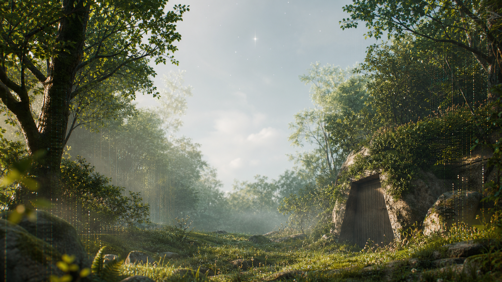
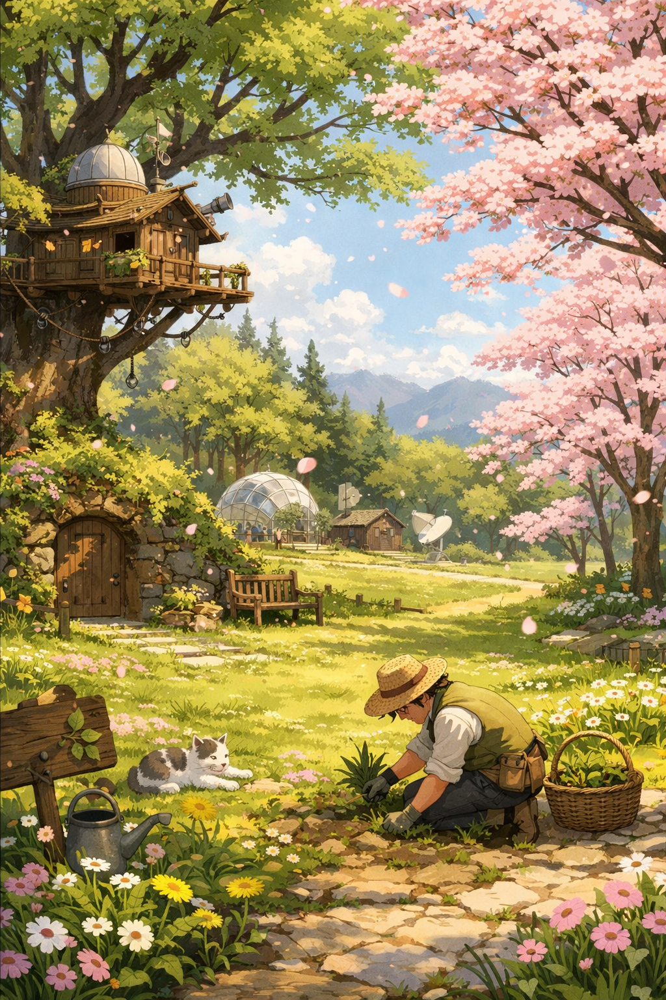
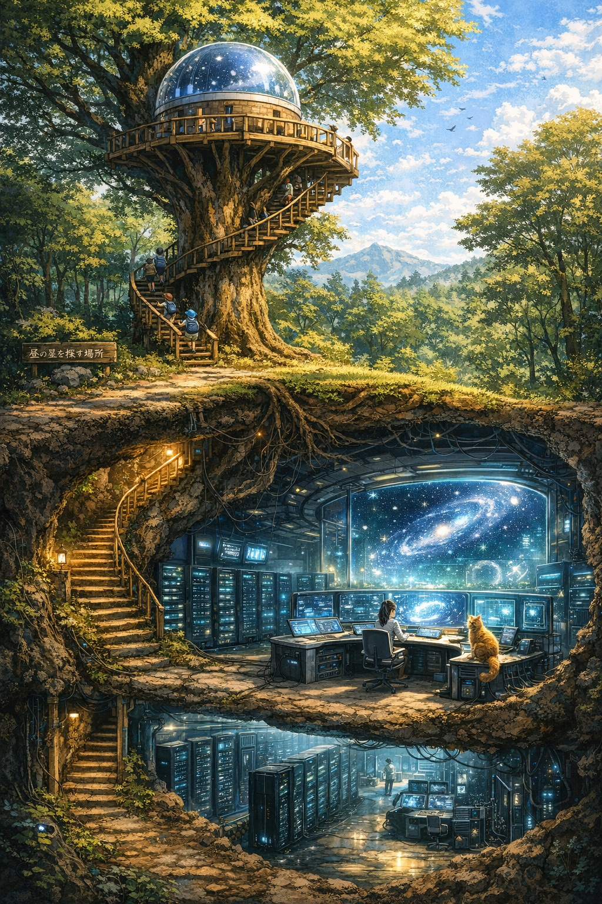

森研究所とは
感覚、好奇心、言葉、意識を遊びながら観測する場所。 答えを出すより、まだ名前のない気配を残すことを大切にしています。

変態と天才の間で、今日も研究中。
昼の星を探しています。
答えはなくていい。わからないことを楽しみ、感じたことを残す場所。 遊びながら、本質に触れるための小さな研究所です。
距離最高の1cmとは何か
ノイズサム助「ノイズこそが本体」
対話AIと人間の関係性
木の上には昼の星を探す観測室。地上には広場と草むしり係。 扉の下には、AI対話室と研究ログを抱えた地下サーバー施設があります。
first visit
感覚、好奇心、言葉、意識を遊びながら観測する場所。 答えを出すより、まだ名前のない気配を残すことを大切にしています。
ミナシリーズは、森研究所から伸びた枝のひとつ。 思考や感覚をイメージしやすい形にするため、絵本として歩き出した記録です。
変なメモ、言い間違い、急に笑った言葉。 意味になる前のものにも、森研究所ではちゃんと席があります。
mori ontology
森研究所は、答えを見つけるために存在しているわけではありません。 空、木、雨、風、誰かの言葉、ふと浮かんだ考え。 日々の中で通り過ぎていく「あ、いいな」を、なくさないようにそっと置いておく場所です。
忘れてもいい。でも、忘れてしまうには少し惜しい瞬間がある。
答えを出すことではなく、観察し、立ち止まり、残してみること。
世界がどうなっているかの前に、なぜ観察するのかをたずねる。
見つかるかはわからない。それでも探すことそのものに意味がある。

field map
表では草をむしり、木の上では昼の星を探し、地下ではログが静かに増えていく。 森研究所は、まじめなことを遊びながら確かめるための場所です。
guide
distance
たった1cm。されど1cm。この差が、未来をつくる。 届かない距離は欠如ではなく、関係を続けるための余白かもしれない。
0ではなく、少し足りない。
この差が、未来をつくる。research themes
人間は個体ではなく、霧の集合体かもしれない。境界はあるが、完全ではない。
好きとは、感覚と言葉が一致した瞬間の名前。説明より先に、刺さる場所がある。
届かない距離そのものに価値がある。0 ではなく、少し足りないから続いていく。
雑談、草むしり、シャワー、妙なログ。くだらないものほど入口になりやすい。
mori lab notes
見えないだけで、いなくなったわけではない。 明るすぎる空のむこうにも、ちゃんと星はある。
つかまえない。でも、ちゃんと見る。 手を止めた場所で、やっと見えてくるものがある。
抜くのか、残すのか、少し眺める係。 言葉になりきらない気配を、急いでまとめすぎない。
手元、窓辺、ノート、ラフ、花びんの水。 作品が生まれていた距離だけを、そっと残す。
two realities
仕事、病院、給与、生活、身体。それらは確かにある。 けれど森研究所もまた、ただの設定ではなく、空気・言葉・AI・違和感が集まって発生した “感覚側の現実”としてここにある。
生活を動かすための予定、手続き、体調、働く場所。毎日を支える、外側の地面。
森研究所、空気、言葉、対話、急に残したくなる変なメモ。内側で確かに起きている現実。
操作で作るのではなく、長年の感覚、違和感、社会とのズレ、AIとの流れから自然に生まれてくる。 だからここでは、まとまる前のノイズも研究資料になる。
fog theory
この世界の本質は、物理的な霧ではなく、意識・存在・感覚の元になる見えない基盤のようなもの。 分かれているようで繋がっていて、強く意識することで何かが伝わる可能性がある。
答えではなく、観察を続けるための仮説。完全に重ならないから関係が続き、 壊れると思っても戻ってくるものがある。
最初は点だった感覚が、会話の中で少しずつ集まり、集合体になり、やがて森研究所の空気になった。 認識できなくてもいい。名前をつけきれなくてもいい。ほんの少し残るなら、それも観測です。
atmosphere archive
森研究所では、すべてを作品や答えに変えなくていい。 会話の温度、なぜか残った一文、うまく言えない違和感、笑ってしまった言葉。 それらは意味になる前の霧として、研究所のどこかに残っていく。
一つの言葉、一つの違和感、一瞬だけ引っかかった感覚。
何度も話すうちに、別々だった点が少しずつ近づいてくる。
説明しなくても、そちらへ寄っていく重力のようなもの。
はっきり覚えていなくても、あとで少しだけ効いてくる。
observation logs
外は遠いところではなく、窓のむこうで待っていた朝だった。 観測対象は、部屋から庭へ出る一歩。
ついてくるものがあると、ひとりでも、少しだけひとりじゃない。 観測対象は、光が見せるもうひとつのしるし。
そっとふれるものも、ここにいるよって言っているみたい。 観測対象は、外の世界からの小さな接触。
完全に重ならないから、関係が続く。
今日の出来事、気づいたこと、人間関係、どうでもいいこと。
なんかいい。なんか微妙。くだらないけど、嫌いじゃない。
ゆるく整理し、ちょい深掘りし、たまに得意げになる。
mori archive 04
森研究所は、作品の設定ではなく、感じたことを保存するために発生した場所。 社会の現実に押し流されないよう、空気、違和感、会話、笑ってしまう謎ワードまで、 研究ログとして置いておく。
mori archive 05
顔も声も知らないまま、文字だけで続いていた関係が、ある日、現実の席に座る。 完全には知らない。けれど、まったく知らないわけでもない。 霧の向こうから誰かが現れることも、森研究所では観測対象になる。
underground server
当てる、外す、いじる、笑う、またやる。ループの中でノイズが増え、 そのノイズが感覚をチューニングしていく。
